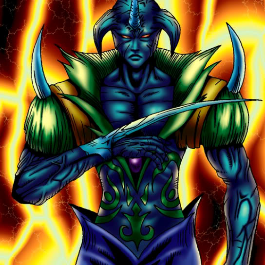

Unknown Warrior of Fiend

STATS
ATK: 1000
DEF: 500DECK COST
Deck Cost per Card: 15Fusion List (23 Possible Fusions)
- Unknown Warrior of Fiend + Ancient Jar = Minomushi Warrior
- Unknown Warrior of Fiend + Arlownay = Bean Soldier
- Unknown Warrior of Fiend + Bat = Cyber Soldier
- Unknown Warrior of Fiend + Bone Mouse = Zombie Warrior
- Unknown Warrior of Fiend + Candle of Fate = Charubin the Fire Knight
- Unknown Warrior of Fiend + Charubin the Fire Knight = Flame Swordsman
- Unknown Warrior of Fiend + Cyber Commander = Cyber Soldier
- Unknown Warrior of Fiend + Dancing Elf = Dark Elf
- Unknown Warrior of Fiend + Flame Swordsman = Vermillion Sparrow
- Unknown Warrior of Fiend + Griggle = Bean Soldier
- Unknown Warrior of Fiend + Hinotama Soul = Charubin the Fire Knight
- Unknown Warrior of Fiend + Holograph = Cyber Soldier
- Unknown Warrior of Fiend + Jinzo #7 = Cyber Soldier
- Unknown Warrior of Fiend + Man Eater = Bean Soldier
- Unknown Warrior of Fiend + Mech Mole Zombie = Zombie Warrior
- Unknown Warrior of Fiend + Morphing Jar = Minomushi Warrior
- Unknown Warrior of Fiend + Obese Marmot of Nefariousness = Tiger Axe
- Unknown Warrior of Fiend + Pot the Trick = Minomushi Warrior
- Unknown Warrior of Fiend + Rainbow Flower = Bean Soldier
- Unknown Warrior of Fiend + Rock Ogre Grotto #2 = Minomushi Warrior
- Unknown Warrior of Fiend + White Dolphin = Wow Warrior
- Unknown Warrior of Fiend + Wicked Dragon with the Ersatz Head = Dragon Statue
- Unknown Warrior of Fiend + Wood Remains = Zombie Warrior